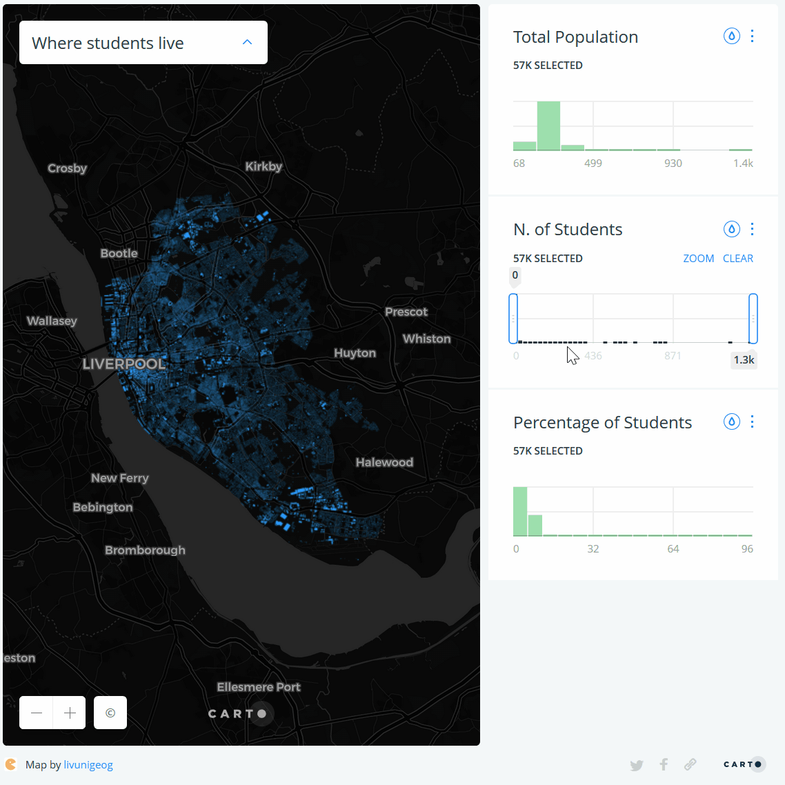
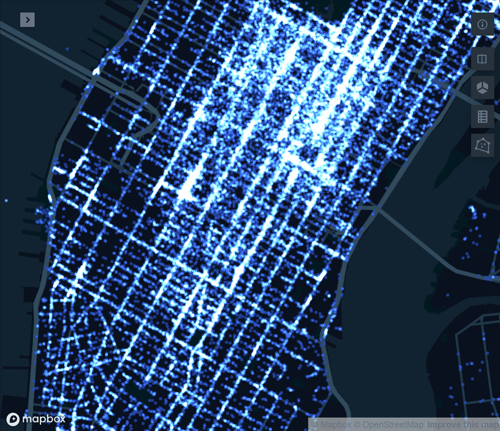
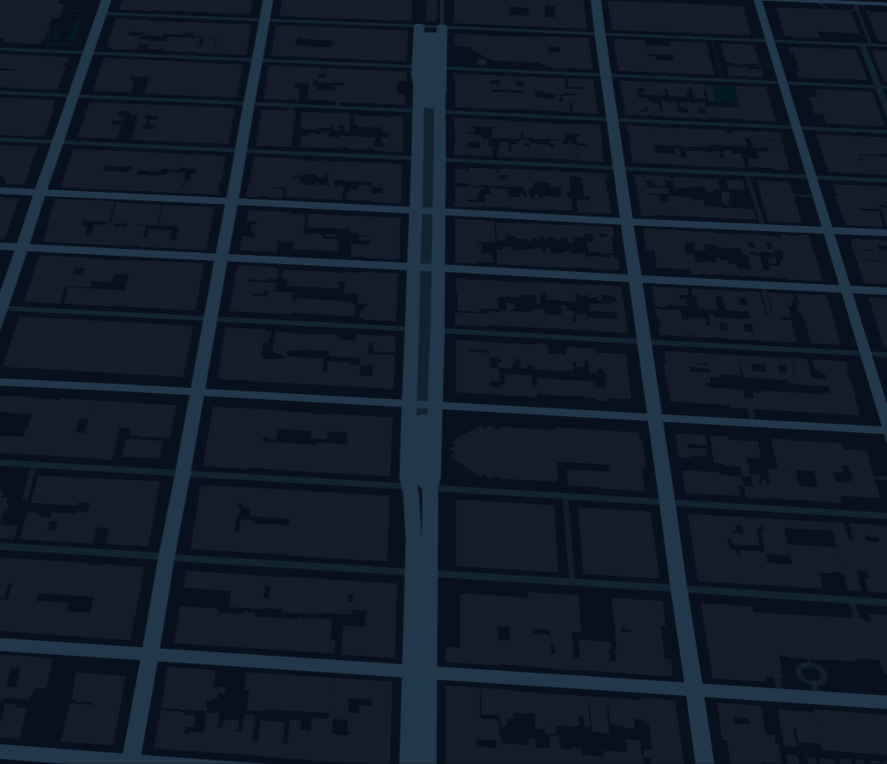
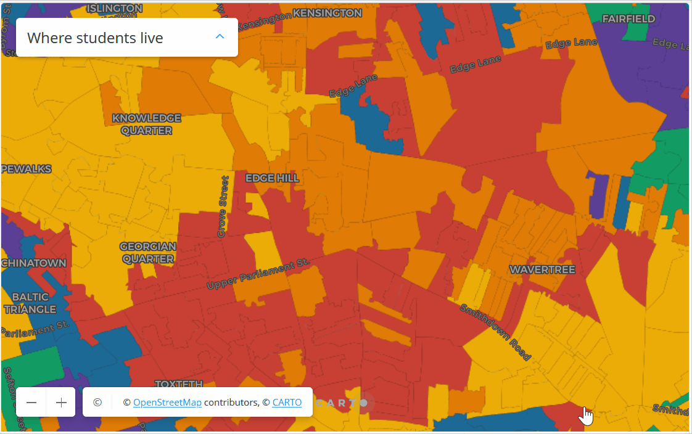
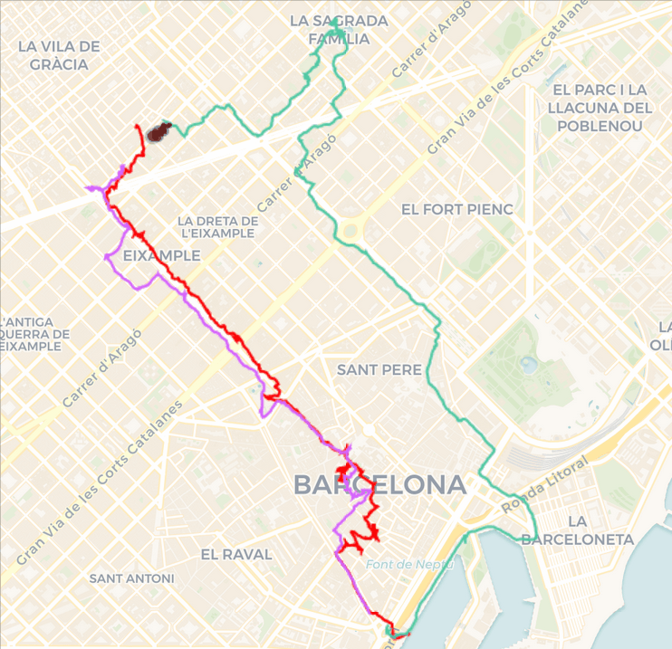
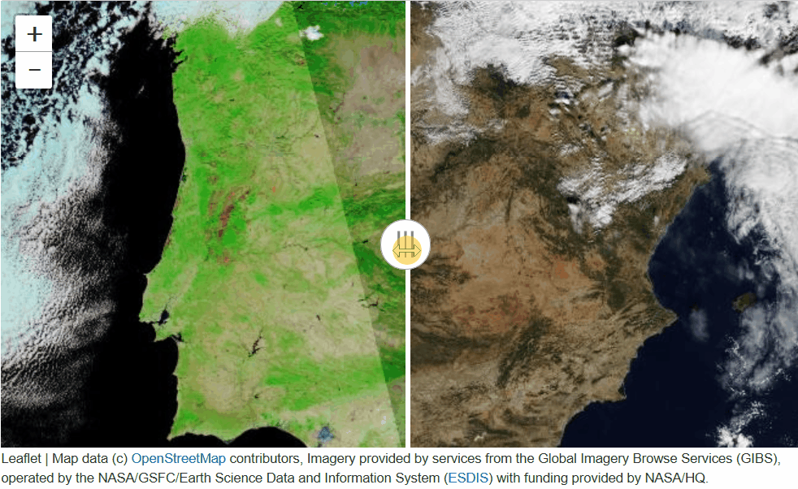

Web Mapping & Analysis
Interactivity
Dani Arribas-Bel
Today
- Interactiviy
- Interactive (Web) Maps
- Interactivity building blocks
Interactivity
Interactivity: what
(OED)
- Ability to dynamically modify a visualisation
- Action/response as part of the experience
Interactivity: why
Munzner (2016):
- Handle complexity
- Cause the view to change
- Support investigation at multiple levels of detail
- Expand the capabilities of vis (many idioms depend on it)
Interactivity: when
“[when] seeing the dataset structure in detail is better than seeing only a brief summary of it”
Munzner (2016)
- Too much to visualise all at once
- Both “big picture” and “detail” matter
Interactive (Web) Maps
Interactive (Web) Maps
Interactive (Web) Maps
- Efficient medium for high information throughput (Tufte)
- Maps as “windows” into large datasets
- “A map of many maps”
Interactivity Building Blocks
Interactivity Building Blocks
|
|
Filtering
- Widely used design choice in visualisation
- Reduction of the set of elements being displayed
- Discard geographically or attribute-based
Filtering: Pan
|
|
 Mapbox Mapbox
|
Filtering: Zoom
|
|
 Mapbox Mapbox
|
Filtering: Subset
|
|
 GDSL |
Perspective
|
|
 Kepler.gl |
Volume (3D)
|
|
 Kepler.gl |
Tooltips
|
|
 Carto |
Animate
|
|
 Carto |
Split
|
|
 ipyleaflet
|
General tips
- Think about the experience first, then consider the technology
- Avoid feature creep
- “Interactive” is not a binary

Web Mapping & Analysis by Dani Arribas-Bel is licensed under a Creative Commons Attribution-ShareAlike 4.0 International License.